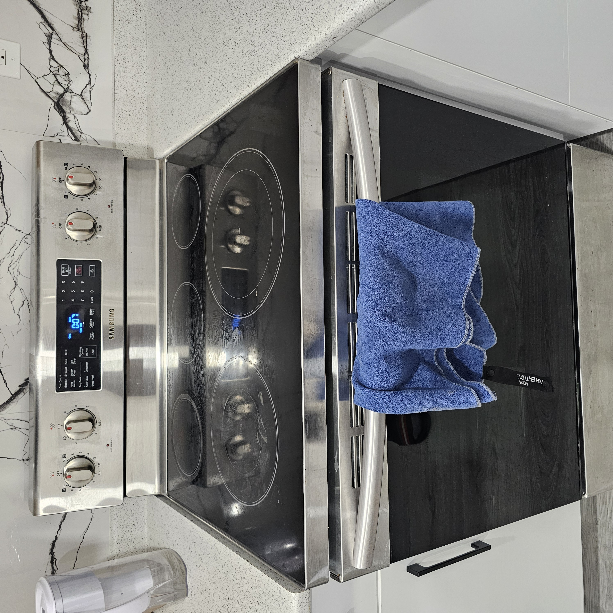
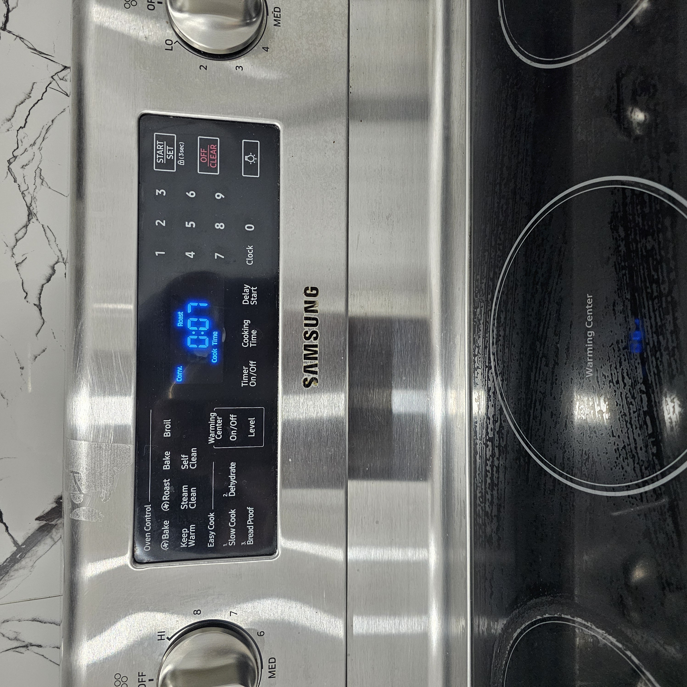

Roast program samsung oven Bake Broil whats the difference?
I think that the Roast program is considered a very excellent program for baking, for cooking meat, vegetables, it will look very appetizing and it will be just as pleasant to eat this food after cooking. How does Roast differ from Broil and Bake? I’ll give an example: if we use Bake to cook meat, it seems to me that this will not work for 2 kg of chicken or porkб beef because the maximum temperature will remain at the bottom of the baking tray and the meat may not bake properly and will be dry at the bottom and juicy at the top, and the inside may not be baked at all, so the Bake program is best suited for baking, or even making pizza.
Broil program stove
let's look at the broil program in the samsung stove. This program is designed to warm up pita bread quickly or brown and caramelize the top of meat chicken, beef, pork, veal, lamb, you can use this program after Bake then you dry the chicken skin and brown it, it's so easy to use this program.
Roast programm how to use.
Roast program is very like and very suitable for baking turkey, and beef or pork ribs, pork and beef have thick bones on the ribs and also meat, in order to heat these bones and meat need a good temperature of 400 F for 2 - 2.5 hours for this is the Roast samsung oven program. How this rogram works I will tell you in brief - Roast button after pressing turns on the fans inside the oven near the fans are heating foams, at this time fans blow hot air around the meat during the time is maintained high temperature around the meat.Meat is quickly cooked and becomes juicy, as well as if you wrap the meat in foil you will never burn meat and will be allgdya soft and juicy.
How to cooking
Here's a tasty tip- After cooking Roast program take the foil and put it back in the oven on Broil program for 5 minutes it will brown your meat and at the same time it will be juicy inside, that's how the program works in Samsung Stove.